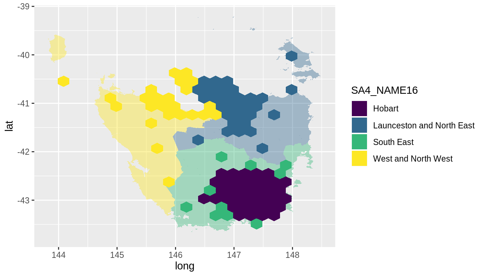
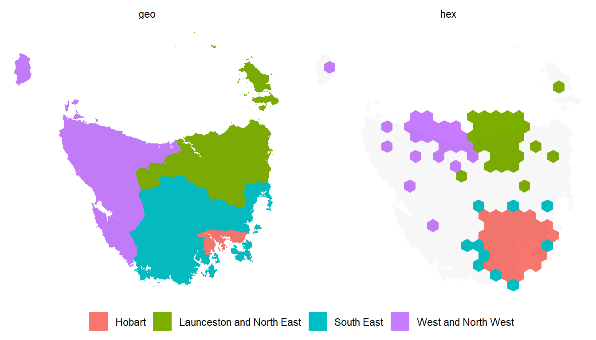

The sugarbag package can be downloaded directly from github:
Tasmania is a state of Australia, it has one large land mass and several smaller islands.
We will use the Australian Bureau of Statistics’ ESRI shape files to build our map. Provided for convenience on the package website:
https://srkobakian.github.io/sugarbag/articles/abs-data.html
The set has been filtered for only Tasmanian areas. The data set of Tasmanian Statistical Areas at level two has been provided as a package data set, ?tas_sa2.
The function create_centroids finds the central points of the polygons provided as an argument.
To tesselate correctly, all the hexagons must be evenly spaced. This function creates a grid of possible locations for the polygons.
Each polygon centroid will be allocated to the closest available hexagon grid point. The capital cities data set will be used to preserve neighbourly relationships.
hex_allocated <- allocate(centroids = centroids,
sf_id = "SA2_NAME16",
hex_grid = grid,
hex_size = 0.2, # same size used in create_grid
hex_filter = 10,
use_neighbours = tas_sa2,
focal_points = capital_cities,
width = 30, verbose = TRUE) # same column used in create_centroidsh1 <- hex_allocated %>%
fortify_hexagon(hex_size = 0.2, sf_id = "SA2_NAME16") %>%
left_join(., tas_sa2) %>% mutate(poly_type = "hex")
p1 <- fortify_sfc(tas_sa2) %>% mutate(poly_type = "geo")
ggplot(mapping = aes(fill = SA4_NAME16)) +
geom_polygon(data = p1, aes(x=long, lat, group = interaction(SA2_NAME16,polygon)), alpha = 0.4) +
geom_polygon(data = h1, aes(x=long, lat, group = interaction(SA2_NAME16))) + scale_fill_viridis_d()
hex_anim <- h1 %>%
select(SA4_NAME16, SA2_NAME16,
SA2_NAME16, long, lat, poly_type) %>%
left_join(p1 %>% distinct(SA2_NAME16, polygon), by = "SA2_NAME16")
geo_anim <- p1 %>%
select(SA4_NAME16, SA2_NAME16,
SA2_NAME16, long, lat, polygon, poly_type)
anim_tas <- bind_rows(hex_anim, geo_anim) %>% left_join(homeless)
anim_tas %>%
ggplot(aes(x=long, y=lat, group = interaction(polygon, SA2_NAME16))) +
geom_polygon(aes(fill = SA4_NAME16)) +
geom_polygon(data = geo_anim %>% select(-poly_type), fill = "grey40", alpha = 0.05) +
coord_equal() +
theme_void() +
guides(fill = guide_legend(title = NULL)) +
theme(legend.position = "bottom") +
facet_wrap(~poly_type) + scale_fill_viridis_d()